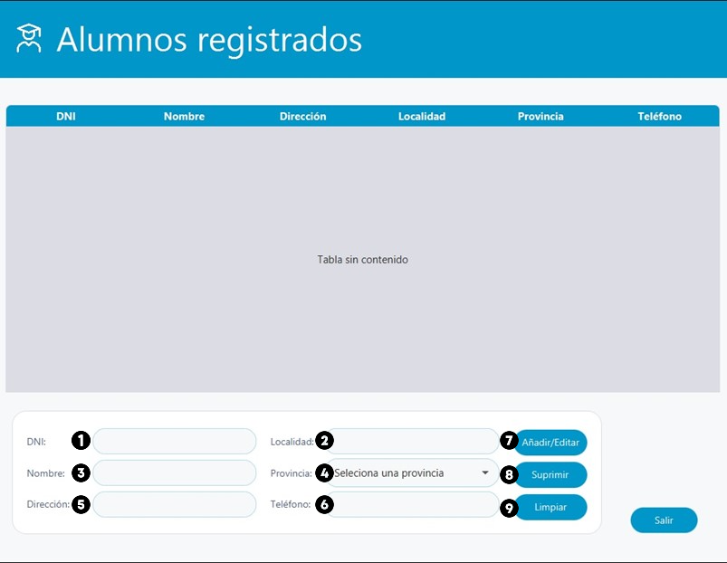
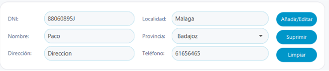

Ayuda alumnos registrados
En esta pestaña se observa un listado de los alumnos registrados en la base de datos.

- Se puede ordenar los alumnos pulsando en cualquier campo (DNI, Nombre, Dirección...)
- Si pulsamos encima en algún alumno registrado se auto completará los campos correspondientes en la zona inferior de la ventana

A tener en cuenta en la introducción de datos:
- DNI. Se mostrara el DNI del alumno seleccionado, con posibilidad de editar el DNI.
- Localidad. Se mostrara la localidad del alumno seleccionado, con posibilidad de editarlo.
- Nombre. Se mostrara el nombre del alumno seleccionado, con posibilidad de editarlo.
- Provincia. Se mostrara la provincia del alumno seleccionado, con posibilidad de editarlo.
- Dirección. Se mostrara la dirección del alumno seleccionado, con posibilidad de editarlo.
- Teléfono. Se mostrara el teléfono del alumno seleccionado, con posibilidad de editarlo.
- Añadir/Editar. Posibildidad de editar los datos, una vez cambiado los campos anteriores.
- Suprimir. Se borrara el alumno seleccionado, registrado en la base de datos.
- Limpiar. Se limpiara todos los campos dejandolo vacio.